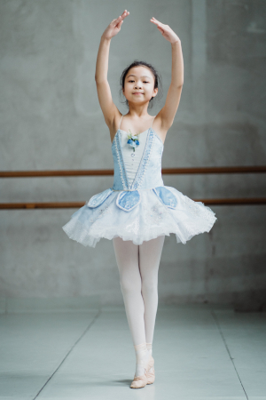
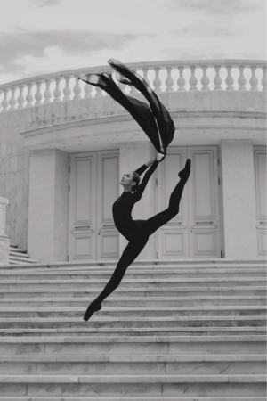
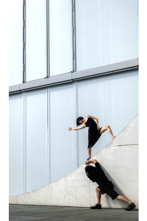

Danza
  
Danza Contemporánea:
Características:La danza contemporánea es un estilo de baile moderno que busca la expresión personal y emocional a través del movimiento. A menudo es fluida y no sigue un conjunto rígido de reglas de técnica, lo que permite a los bailarines explorar movimientos no convencionales y experimentar con la improvisación.
Técnica: Los bailarines de danza contemporánea trabajan en la técnica de caída al suelo, giros, movimientos expresivos y la conexión con el espacio y el tiempo.
Música: Pueden utilizar una variedad de géneros musicales, desde música clásica hasta contemporánea, electrónica y más.
Vestuario: El vestuario suele ser contemporáneo y a menudo refleja el tema o el estado de ánimo de la coreografía.
Ejemplos de coreógrafos notables: Martha Graham, Merce Cunningham, Pina Bausch.
Danza Aeróbica:
Características: La danza aeróbica combina movimientos de baile con ejercicios cardiovasculares para mejorar la resistencia y la aptitud física . Suele practicarse en grupo y se enfoca en el ritmo y la energía.
Técnica: Los movimientos son enérgicos y se realizan al ritmo de la música. Incluye pasos de baile como saltos, giros, pasos de sidestep y movimientos de brazos.
Música: Se utiliza música de ritmo rápido y pegajoso que motive a los participantes a moverse con energía.
Vestuario: El vestuario es cómodo y adecuado para el ejercicio.
Beneficios: Ayuda a mejorar la resistencia cardiovascular, quemar calorías y fortalecer los músculos.
Danza Tango:
Características: El tango es un género de danza y música de origen argentino que se caracteriza por su sensualidad y pasión. Suele bailarse en pareja y se basa en la conexión y la comunicación entre los bailarines.
Técnica: Los pasos de tango pueden ser complejos y requieren una técnica cuidadosa en la coordinación, el equilibrio y la postura.
Música: La música de tango es melódica y apasionada, a menudo interpretada con instrumentos como el bandoneón y el violín.
Vestuario: Los bailarines de tango suelen vestirse de manera elegante, con trajes para los hombres y vestidos para las mujeres.
Estilos de tango: Existen varios estilos de tango, como el tango argentino, el tango de salón y el tango escenario.
Danza Clásica:
Características: La danza clásica es un estilo de baile tradicional que se caracteriza por su precisión, elegancia y belleza. Los bailarines suelen llevar zapatillas de punta y realizar movimientos técnicamente exigentes.
Técnica: La danza clásica se basa en posiciones y movimientos codificados, como pliés, tendus, arabesques y fouettés. Se enfoca en la alineación y el equilibrio.
Música La música clásica, especialmente la de compositores como Tchaikovsky y Prokofiev, se utiliza con frecuencia en la danza clásica.
Vestuario: Los bailarines de danza clásica suelen llevar trajes o tutús de ballet, dependiendo de la pieza.
Cada una de estas disciplinas de danza ofrece una experiencia única y puede adaptarse a diferentes gustos y objetivos, ya sea la expresión artística en el caso de la danza contemporánea, el ejercicio y la diversión en la danza aeróbica, la pasión y la conexión en el tango, o la elegancia y la técnica en la danza clásica.
Plan de estudio
- Tecnicas de ejecucion e interpretancion
- Diferentes generos y modalidades de bailes
- Lenguajes y expresion corporal
- Anatomia
- Historia de la danza
- Coreografia
- Kinesiologia
- Musica para danza
- Estetica
- Produccion y gestion de artes escenicas
- Teatro
Además, te invitamos a conocer el blog de danza clásica creado por algunas de nuestras exalumnas de la Academia IMA. Ellas ofrecen tutorías de apoyo para reforzar tanto los contenidos teóricos como prácticos de esta hermosa expresión artística. Puedes acceder al Blog de Ballet para obtener más información.